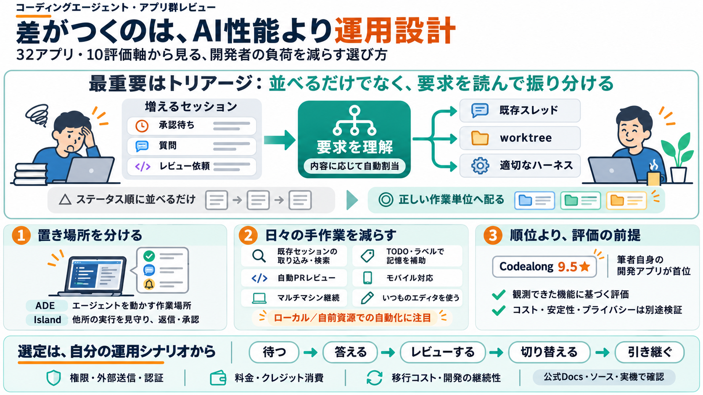

Best AI Code Review Tools in 2026: Costs & Trade-offs
The best AI code review tool for most teams in 2026 is a GitHub-native bot that reviews every pull request automatically…

The best AI code review tool for most teams in 2026 is a GitHub-native bot that reviews every pull request automatically…
honest across reconnects and revisits Refuse Resume all while disconnected instead of queueing it, re-read the offer on …
The widest range belongs to Claude Code Review, which Anthropic prices between $15 and $25 per pull request, depending o…
Claude Code with the orca-review skill reviewing a pull request by number: plan, review, submit, verdict Claude Code, C…
Cat Wu, Anthropic’s Head of Product, explained the market demand to Bitcoin World. “We’ve seen tremendous growth in Clau…